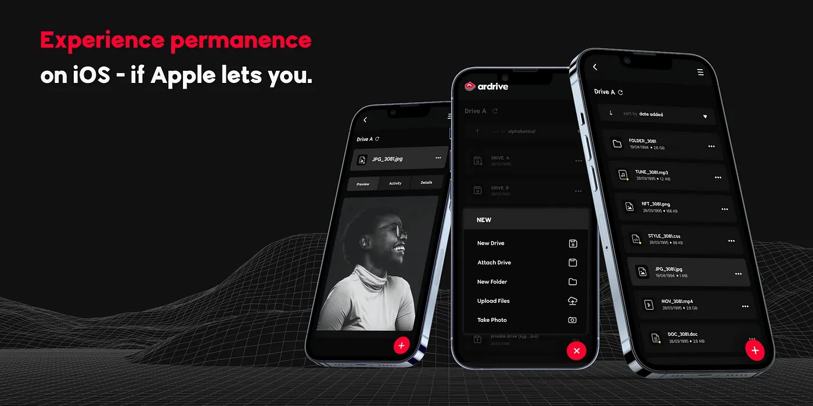

wen ArDrive Mobile for iOS?
TLDR
Apple rejected our blockchain based data storage app for not incorporating In-App Purchases, a requirement that: 1) does not apply to our use case, 2) is not technically feasible to incorporate, and 3) has not been enforced on applications with similar core functionality. Interesting coincidence between our review and Apple's recent app store guideline updates. This post is intended to serve as a PSA so that other teams may learn from our experience as well as to get Apple's attention so that they may reconsider their position and its impact to the broader ecosystem..
Background
ArDrive is a file storage and navigation system built and developed by the ar.io Team for the Arweave blockchain protocol. If you are unfamiliar with Arweave, it is a global, decentralized, and permanent hard drive, also known as the "Permaweb". Through our ArDrive platform, users can interact with the Permaweb much like they do with Dropbox, Google Drive, etc with three key differences: 1) ArDrive does not maintain any user account data, 2) the files uploaded are permanent and immutable... "forever", 3) users only spend the network's native Arweave token ($AR) once to upload data then that's it – their files will always be available without additional monthly fees or subscriptions.
For over two years, our flagship product has been the browser-based ArDrive web-app. Recently we announced the launch of our Mobile app to further our goal of getting permanent data storage into the hands of everyone. You can read more about the launch here: https://www.coindesk.com/business/2022/10/06/ardrive-mobile-goes-live-on-google-play-store-bringing-decentralized-data-storage-to-android-devices/
The Android version of the app is available now on the Google Play Store: https://play.google.com/store/apps/details?id=io.ardrive.app&hl=en_US&gl=US

Unfortunately, the Apple iOS version will no longer be Available SoonTM, hence this post…
Rejection
Our intent was to first launch the mobile app on iOS with the Android version to follow soon after; however, Apple's vague enforcement of their app guidelines stifled those plans.
The Android submission and review process went smoothly, we were approved ahead of schedule which was great: checkbox Android.
The Apple process, however, was expectedly laborious. After several review comment sessions and consequent updates as well as an initial release approval, our team thought we had done it and (perhaps naively) set the launch date to occur after what we understood would be a final cursory review. On the day of launch (October 5th) we excitedly opened what we anticipated to be an approval notice from Apple only to see a bold REJECTED with a comment that we had not received in the prior reviews:
Guideline 3.1.1 - Business - Payments - In-App Purchase We noticed that your app includes or accesses paid digital content, services, or functionality by means other than in-app purchase, which is not appropriate for the App Store. Specifically:
- Your app accesses digital content purchased outside the app, such as NFT, but that content isn't available to purchase using in-app purchase.
We were dismayed. Not so much because we missed the launch date but more so on reflection of the countless hours that the team put into this product, only to have it shot down last minute for "not complying" with a guideline that is a clear money-grab and that does not even apply to our application.
Appeal
After reviewing the details of the rejection, our team determined that neither the rejection statement nor the referenced guideline requirements could be practically incorporated into to our application. How can in-app (fiat based) purchases be used for a decentralized blockchain network's transaction 'gas' in place of its native token? Here is the language of Section 3.1.1 'In-App Purchase' from the guideline at the time of our submission (note that this has since changed as of October 24th):
If you want to unlock features or functionality within your app, (by way of example: subscriptions, in-game currencies, game levels, access to premium content, or unlocking a full version), you must use in-app purchase. Apps may not use their own mechanisms to unlock content or functionality, such as license keys, augmented reality markers, QR codes, etc. Apps and their metadata may not include buttons, external links, or other calls to action that direct customers to purchasing mechanisms other than in-app purchase, except as set forth in 3.1.3(a).
Our team asserted that the requirements of this section do not apply as the ArDrive app does not have any features or functionality locked to the user – full functionality is available to the user by default without any purchase or subscription necessary.
We decided to file an appeal for reconsideration with the intent of clarifying any misunderstandings of our app's functionality with the Apple team through the process.
Here is some of the background that we provided:
ArDrive is a digital file storage platform like Google Drive or Dropbox with a few notable exceptions:
- Instead of central cloud-based storage akin to the comparable platforms, ArDrive user files are stored on the permissionless and decentralized blockchain network known as Arweave.
- To upload files to this network, users must exchange the network's native cryptocurrency ($AR) for the equivalent storage along with associated transaction fees necessitated by the protocol. The tokens expended in this process go directly to the decentralized network's protocol, not to any specific individual or organization. This is directly analogous to any cryptocurrency wallet (Coinbase Wallet, Trust Wallet, Atomic Wallet, Phantom Wallet, etc.) facilitating the expending of "gas" in the native currency of a blockchain for transaction data to be included in the blockchain's block-space.
- ArDrive does not maintain a central user account and access system; instead, users "log in" to the platform using their own set of cryptographic keys (aka their "wallet"). In summary, the ArDrive app is fully functional by default, does not have locked features, and does not offer any in-app or out-of-app content, feature, or subscription purchases to the user; therefore, the requirements presented above do not apply. Interacting with our app is more like interacting with a cryptocurrency wallet than a gaming type platform that the app store requirements were seemingly tailored for: Users bring their own cryptographic keys to the app which the app then facilitates them to exchange their tokens for blockchain block-space. In the case of, say, an Ethereum wallet, users exchange $ETH for ledger space on the Ethereum network while in the case of the ArDrive app, users exchange $AR for block storage space on the Arweave network.
We also went line-by-line through their guidelines commenting on each requirement and its inapplicability to ArDrive Mobile.
Ultimately, our appeal was rejected based on the same regurgitated guideline section without any further clarification or ability to speak with a human to explain the nuances of our position – namely that our app is essentially no different in core functionality than the cryptocurrency wallets already approved for the app store.
Conclusion
That's the story of ArDrive Mobile on iOS and its release status – Apple seems to be resting their case on the ability to "upload a file" being synonymous with "unlocking functionality" which would only be permitted through in-app purchases. On Monday October 24th, Apple released updated guidelines that, taken in the context of the ArDrive rejection, seem to completely rule out the "functional" use of cryptocurrency in approved apps.
Our team does not intend to give up on the app's development and approval, it will be difficult without meaningful engagement from Apple, but we do have a potential ace up our sleeve. In the meantime, we encourage users to try out the web-app or Android versions and stay tuned for updates through our twitter accounts: @ardriveapp and @ar_io_team
We'd love to hear from you if your team has had similar experiences!
Find out more at:
• ArDrive Mobile: https://ardrive.io/mobile
• Project team site: https://pds.inc/
*Note that this article was originally published on 2022-10-25 and since then, the team has not been able to make any progress with the app store listing.